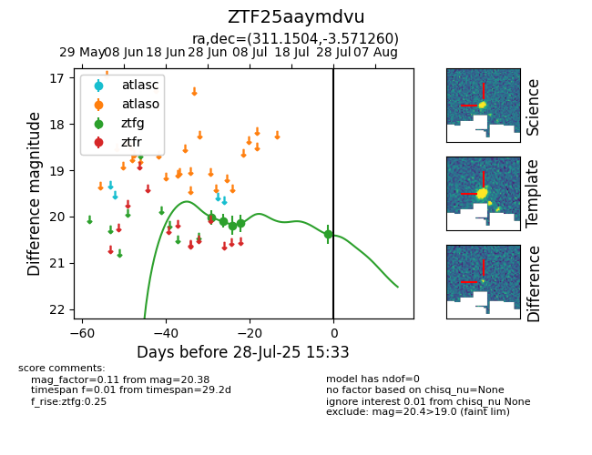

Target ZTF25aaymdvu at 2025-07-28 15:33, see:
FINK: fink-portal.org/ZTF25aaymdvu
Lasair: lasair-ztf.lsst.ac.uk/objects/ZTF25aaymdvu
ALeRCE: alerce.online/object/ZTF25aaymdvu
alt names
ZTF25aaymdvu (ztf,fink)
coordinates:
equatorial (ra, dec) = (311.1504,-3.57126)
galactic (l, b) = (43.2662,-26.70476)
photometry
last ztfg=20.38
5 ztfg detections
